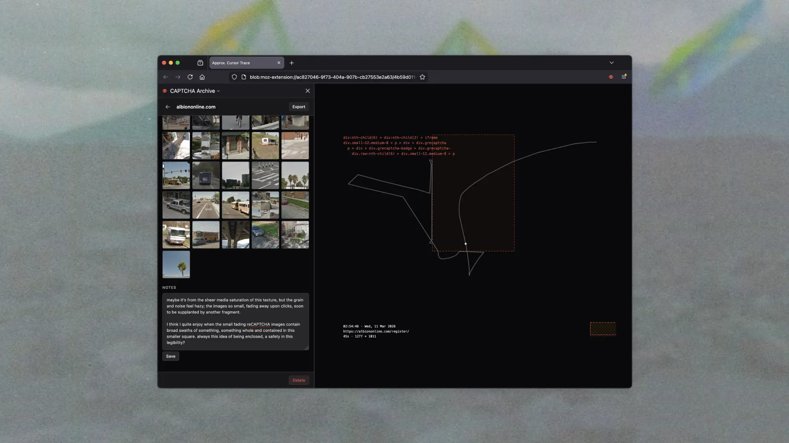

[Independent technical and visual work: experiments in code, interaction, and critical inquiry beyond assigned product work.]
Shorter vignettes to surface how I work, problems I’ve tackled; comfortable collaborating across domains where ambiguity is high and constraints require resourcefulness and designerly translation.
CAPTCHA Diary
LLM-based design/dev
A Firefox extension that records Google reCAPTCHA and hCaptcha encounters. Developed as a research tool for my graduate thesis, the Diary makes the data collection environment itself data. Working with coding agents meant I was able to context switch much earlier, directly inspecting network traffic to learn about my subject matter. While very much a “building for myself” project, the technical hurdles I encountered helped me better gain a developer sensibility.

[Selected creative-code work]
[Add two to four pieces only after selecting the strongest visual and interactive examples. Current repository assets do not include the original sketch files or recordings.]